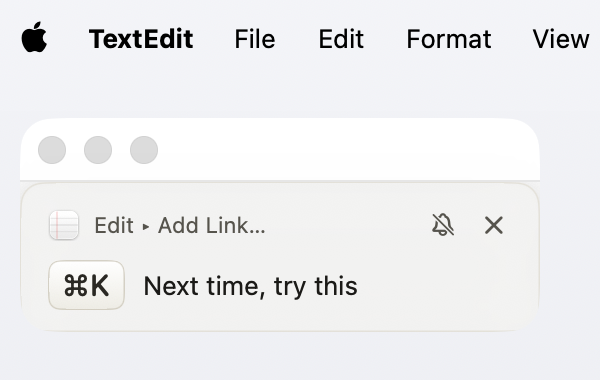
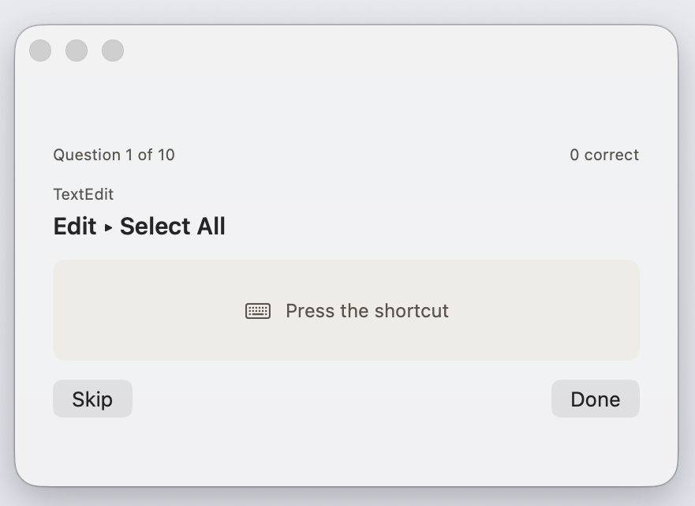
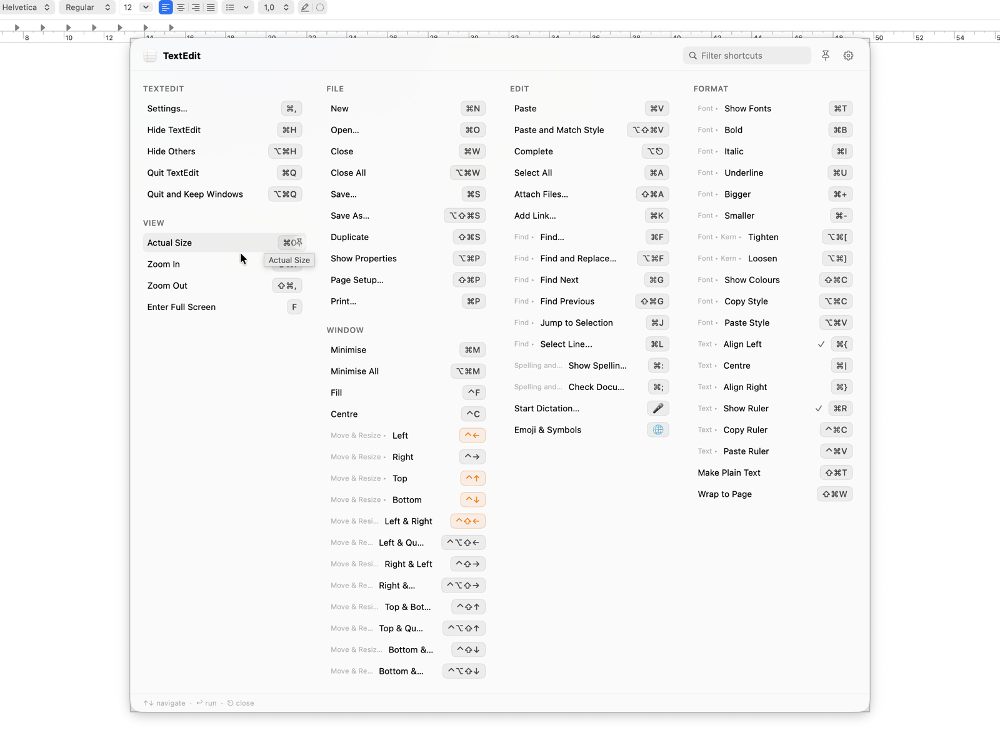
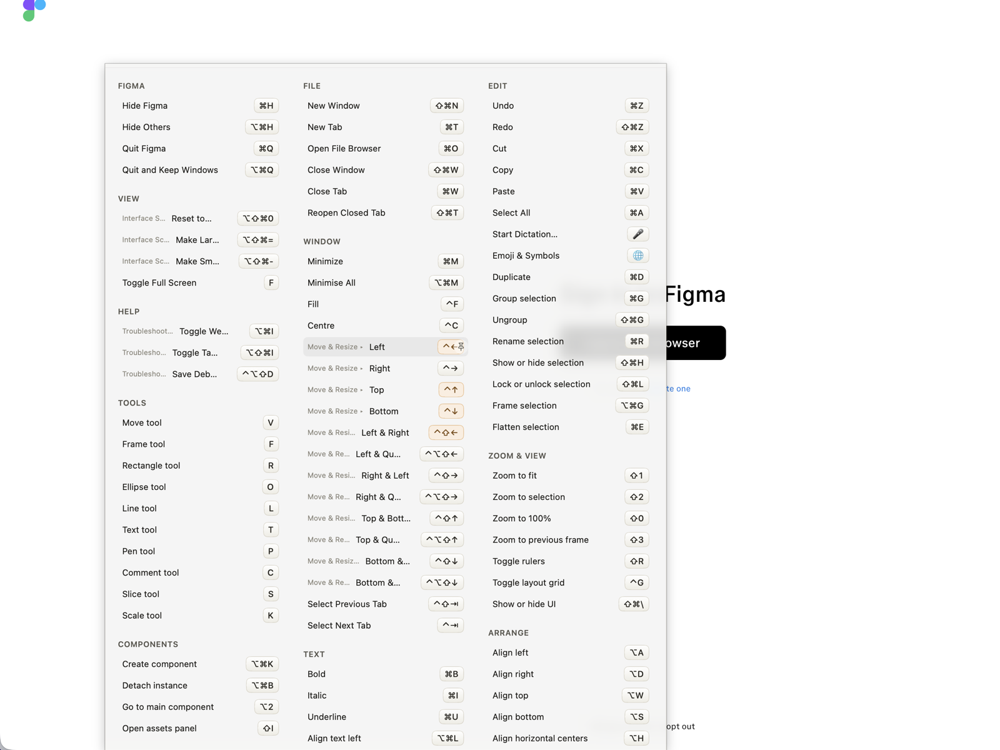

Mantén pulsada ⌘ y Keysi lee en directo los menús de la app que tienes delante, y dibuja cada atajo como una tecla. Pulsa una fila y ejecuta ese comando del menú.
o brew install --cask noloman/keysi/keysi
Gratis, sin límite de tiempo, sin cuenta Incluye 14 días de Pro
Mantén pulsada ⌘ en esta página para verlo.
CheatSheet hizo esto durante años, hasta que dejó de funcionar en macOS Sonoma y se abandonó. Casi todo el mundo dio por hecho que Apple había retirado la API que necesitaba. No fue así. AXUIElementCreateApplication y los atributos de la barra de menús siguen siendo públicos y siguen funcionando, y sobre eso está construido Keysi. La versión larga, y qué cambia.
Sin relación con Media Atelier. Keysi no comparte código con CheatSheet. Es una app nueva construida sobre la misma API pública.
Una lista de atajos espera a que la consultes. Coach no. Vigila los comandos de menú que eliges a mano y que ya tienen un atajo de teclado, y te ofrece un recordatorio discreto que puedes descartar. Luego comprueba si el recordatorio ha calado, y deja de mencionar los que ya has empezado a usar. Eso es lo que compran los $19.99: una referencia que trabaja para dejar de hacerte falta.
Un tiempo de espera lo limita para que no se vuelva ruido. Puedes silenciar un atajo concreto o la función entera desde Ajustes ▸ Coach, y se queda callado durante Focus y No molestar. El modo práctica entrena los que se te siguen escapando. Tu progreso se mide contra tus propios tiempos: Keysi cronometra lo que tardas de verdad en ir al menú, así que «normalmente 2,4 s, y te has ahorrado 412 viajes» es una cuenta sobre dos números que ha contado, no una estimación.
Cada instalación incluye 14 días. Cuando se acaban, la app pasa a la versión gratuita. No deja de funcionar, y no se borra nada de lo que hayas configurado.


Casi todas las herramientas de este tipo se quedan en enseñarte los atajos. Keysi los ejecuta. Pulsa cualquier fila y dispara ese comando del menú, y luego desaparece como Spotlight. No tienes que acordarte de qué dedo va dónde.

Keysi lee los atajos del propio sistema y marca los de la app que macOS va a interceptar antes, así te enteras antes de pulsarlos y no después de que no pase nada.

.vimrc— y Keysi muestra las combinaciones que los menús de esas apps no pueden. Lo que ya está en un menú se queda ahí, con las palabras de la propia app.keysi en el terminal y una URL keysi://. Cómo funciona cada uno.Cómo se compara Keysi con KeyCue, KeyClu y CheatSheet. La tabla completa, con lo que la web de cada competidor afirma y lo que no, con fuente y fecha en lugar de suposiciones.
Ver la comparativa¿Vienes de alguna en concreto? Keysi como alternativa a CheatSheet · Keysi frente a KeyCue · KeyClu es gratis, ¿por qué pagar?
La chuleta completa, no una versión de prueba.
Todo lo de esta lista sigue siendo gratis. Keysi se sigue desarrollando, y una función que llegue más adelante puede acabar en cualquiera de los dos niveles. De aquí no sale nada.
macOS 26 o posterior. Abre la imagen de disco y arrastra Keysi a la carpeta Aplicaciones antes de abrirla. macOS vincula el permiso de Accesibilidad al sitio donde vive la app, así que concederlo desde la imagen de disco no sirve.
Homebrew también funciona, y te ahorra el arrastre: brew install --cask noloman/keysi/keysi
Keysi Pro. No es una suscripción: pagas una vez y es tuya.
keysi://Para hacerse una idea, y se puede comprobar: la suscripción de KeyCue cuesta esos mismos $19.99, pero al año, para los mismos tres dispositivos, según su propia página de precios (consultada el 11/09/2026). Esto son $19.99 una sola vez. Y aquello por lo que KeyCue cobra es justo la parte de Keysi que es gratis.
Para leer la barra de menús de la app que estás usando y poder mostrar sus atajos de teclado. Literalmente, de la propia petición de permiso: «Keysi necesita acceso de Accesibilidad para leer los atajos de teclado de la app que estás usando. Nunca controla tu teclado ni tu ratón sin que pulses explícitamente la fila de un atajo.»
Hay dos conexiones de red que ocurren por su cuenta: la comprobación de licencia con Gumroad y la comprobación de actualizaciones contra el appcast de Sparkle de Keysi. Nada sobre tus menús, las apps que usas o los atajos que pulsas sale nunca de tu Mac.
Las estadísticas de uso están desactivadas por omisión. Si las activas en Ajustes, Keysi envía una lista corta de eventos de producto (aperturas de la app, qué pestaña de Ajustes abres, la aparición del panel, qué atajo has activado y eventos de licencia como el inicio de una prueba o la aparición de un aviso de mejora) a una instancia de PostHog alojada en la UE. Tu clave de licencia, lo que pagaste y el contenido de cualquier menú no se envían nunca. Los diagnósticos de fallos están desactivados por omisión y, si los activas, los genera MetricKit de Apple en el propio dispositivo y no salen de tu Mac a menos que los copies y los compartas tú. En la página de privacidad está la lista completa.
La API de Accesibilidad de la que depende Keysi para leer la estructura de menús de otra app no funciona dentro del App Sandbox, que toda app de la Mac App Store está obligada a usar. Apple lo ha confirmado directamente. Es una limitación permanente, no algo del lanzamiento: todas las herramientas comparables (KeyCue, KeyClu, la CheatSheet original) se distribuyen igual, de forma directa y notarizadas.
Así que Keysi está firmada con un certificado de Developer ID y notarizada por Apple: se abre con normalidad, sin el baile de abrirla con el botón derecho. Las actualizaciones llegan por Sparkle, cada una firmada con una clave EdDSA incrustada en la app y verificada antes de instalarse. No te fíes de nuestra palabra sobre la firma: compruébala tú mismo una vez instalada Keysi:
spctl -a -vvv -t install /Applications/Keysi.app
Sí. Escribe el nombre completo del cask y ya está — sin tap, sin marcar nada como de confianza, sin tocar ningún archivo de configuración antes:
brew install --cask noloman/keysi/keysi
Instala la misma imagen de disco firmada y notarizada que entrega el botón de descarga; el cask no es más que la suma de verificación de ese archivo exacto. Vive en el tap propio de Keysi y no en el repositorio de casks de Homebrew, que exige a una app superar un listón de popularidad que Keysi todavía no ha superado — un tap se instala igual y no necesita el permiso de nadie.
Keysi sigue actualizándose sola a través de Sparkle, y el cask lo declara, así que Homebrew no le lleva la contraria a la actualización de la propia app ni reinstala encima de una versión a la que ya te has actualizado. Si ya tienes Keysi en la carpeta Aplicaciones, añade --adopt y Homebrew adopta la copia que ya está ahí en vez de negarse a sobrescribirla.
No, y es deliberado. Un monitor global de eventos puede observar tus pulsaciones, pero no consumirlas, así que cualquier cosa que escribieras con ⌘ pulsada llegaría igualmente a la app de debajo, y Keysi no va a instalar el tipo de captura de entrada que podría cambiarlo. Mantener ⌘ te lo enseña todo; lo único que no puede es filtrarlo.
Pulsa el atajo global (⇧⌘K por omisión) en su lugar: se abre el mismo contenido como un panel interactivo de verdad, donde la búsqueda, las flechas y Escape funcionan.
Keysi sigue funcionando. Cada instalación empieza con 14 días de Keysi Pro; cuando se acaban (tras un breve periodo de gracia) la app vuelve a la versión gratuita en lugar de pararse. Mantener tu modificador sigue mostrando todos los atajos, pulsar una fila la sigue ejecutando, tus hojas personalizadas siguen cargándose. Lo que se detiene es el entrenamiento: los recordatorios, el modo práctica, las cifras de progreso y el resumen semanal. No se borra nada de lo que hayas escrito o configurado, y si mejoras más adelante retomas donde lo dejaste, porque Keysi sigue contando en local todo ese tiempo. Por eso puede enseñarte lo que te has perdido.
Macs: hasta 3 a la vez. Para mover una licencia, abre Ajustes ▸ Keysi Pro ▸ Desactivar este Mac en el antiguo y actívala en el nuevo con la misma clave.
Reembolsos: 30 días, sin preguntas. Consulta las Condiciones y reembolsos.
Actualizaciones: gratis para siempre, comprobadas automáticamente por Sparkle o a mano desde «Buscar actualizaciones…» en el icono de la barra de menús.
Esto suele pasar justo después de abrir una app, o en su pantalla de bienvenida, antes de que tenga una barra de menús real que leer. Abre un documento o un proyecto de verdad en esa app y vuelve a intentarlo.
Las apps de Electron funcionan: Slack, VS Code y Figma devuelven árboles de menús correctos. Para las combinaciones que solo existen dentro de la app y nunca llegan a su barra de menús nativa, las hojas personalizadas incluidas cubren el hueco.
Sí. En Ajustes ▸ Activadores puedes elegir ⌘, ⌥, ⌃ o ⇧ como modificador, y el retardo es ajustable. Keysi te avisará de lo que implica cada alternativa (⌥ también revela elementos de menú alternativos, ⌃ se solapa con el clic secundario y el Acceso Completo por Teclado, y ⇧ puede disparar las Teclas Lentas o las Teclas Persistentes si las tienes activadas), pero no te impedirá elegirla. El atajo global (⇧⌘K por omisión) se puede reasignar aparte a la combinación que quieras.